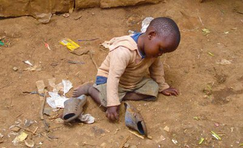
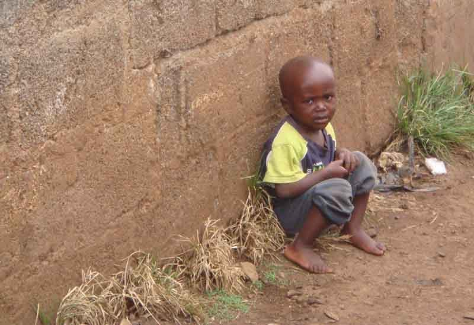

DEVELOPING A FUTURE FOR ORPHANS AND ACHILDREN IN NEED is a project mainly set to help out the orphans and needy children all over the world we set our goals towards winning Uganda's most weakest point which is elminatiing suffering of children in Uganda as it is well seen on the streets of Kampala and other places there are many children that are suffering and it has come to pass that most of them don't have parents back to our dearest poor sisters and brothers after lossing their parents then thats when life starts changing on their side most end up getting unexpected pregnancy which has affected uganda most when we are to count we are eager to find that on 100% of Uganda's occupants atleast 10% are these people that we are trying to help so in these case we would like to help develop our fellow Ugandans in this case here we came with an opinion and that is developing a future for our dearests who are in need
WE ARE LOOKING FORWARD TO CHANGING THE COUNTRY FROM THIS
Imagine how it feels like when your child is going through this life, this challenging life that every one hates, imagine you put your self in those kid's image, how do you think it would feel like? or suppose it turned up one day that one of your family members was going through this to us that looks qite discusting and more challenging than ever
CHALLENGES FACED WHEN HELPING OUT THIS CHILDREN
At most we find challenging things almost daily according to the children we meet all over the country and the following are some of the things so far we have met in this project
LANGUAGE BURRIER: Some times we find that there are many poeple all over the world and that most of them of them know different languages which is a most challenging thing